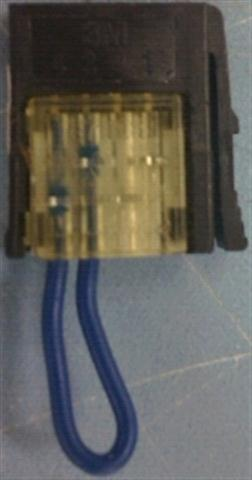
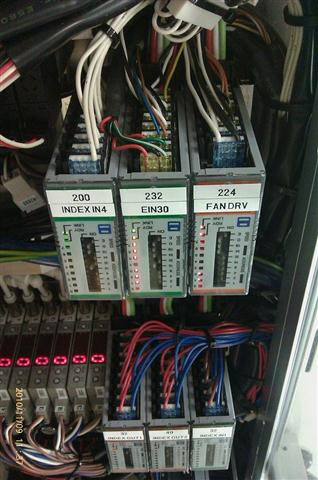

Service History
Subject: IDT(M) NS-8080 check ionizer close loop
Handler Model: NS-8080
Controller: RC520
Date: 9~23 Nov 2010
Symptom
IDT(M) NS8080 suspect close loop not installed.
Action
FAN OFF simulation but no error.
SPEL I/O reflect 283 OFF indicating OPEN.
Physically checked and IN235 is not bypass connector. Suspect during initial start check, operator already clear jam by SKIP+START.
After which any simulation of FAN OFF, no alarm as already SKIP this error.
Advice Chuah to PAUSE+RESET+START again. With Fan off this time, alarm. Verified that with SKIP+START, subsequent fan OFF will have no alarm.
Attached are pictures of bypass connector(short/dummy) and IO module for close loop.
SPEL I/O assignment is 283
I/O module assignment is 283 - 48 = 235.
|
 |
 |
So you should be looking at attached picture 232 (EIN30) module and the 4th connector(235) should be for fan.
Close Loop to all fans:
You should see like attached picture of IO Remote.jpg
Close Loop by bypass connector:
You should see a connector like the picture instead of wiring directly to fan.
If you say off fan and no alarm, it should be with bypass connector.
BUT, SPEL I/O 282 and 283 must be always ON. If you say OFF, it means it's open loop and everytime you start handler, will prompt alarm.
BUT if you SKIP alarm, handler will not alarm anymore. Purpose of SKIP is to continue run even of fan is OFF.
If handler is in production, just ONE CYCLE or PAUSE+RESET so that you can start handler for the check. In case someone already SKIP alarm.
Found out Penang IDT their Handler NS8080, one of the I/O Remote's connector label is wrong. I/O Remote 232 (EIN30) 5th connector, the label should be "IN283" not "OUT276".
Cause
Found out Penang IDT their Handler NS8080, one of the I/O Remote's connector label is wrong. I/O Remote 232 (EIN30) 5th connector, the label should be "IN283" not "OUT276".
Remarks
Use multi-meter to check below when handler is power off:
1. Between D-G NO short-circuit.
(Resistance: >200 Ohm( Value will be depended on equipment))
2. Between 0-24V NO short-circuit.
(Resistance: >few kOhm (Value will be depended on equipment))
Input Bit 282 for Socket/chamber ionizer alarm.
Input Bit 283 for Top Blower ionizers alarm
To turn on Chamber fan, ON SPEL I/O Output Bit 272 & 273.
Skip Enable switch Input Bit is 280.
Skip Enable Switch's LED is Output Bit 130.
Chamber Door sensor is Input Bit 284.
Total there are 2 Chamber Door sensors(SQ284A and SQ284B) linked in series.
Email by Hidaka, 25 May 2011:
To change EIN30 label of 240 Input Module 16 CH (located at Loader area)
EIN30 -> OP IN
EOUT30 ->OP OUT
1) EIN 30 of 16CH (located below Loader unit) include Cover Open Switch(Input Bit 299)
2) EIN7 consist of Input Bit( 104~110 connected to SKP452 E-stop board) for Doors
3) EIN30 of 8 CH (located above Index) include Input Bit 284 for Index side cover door